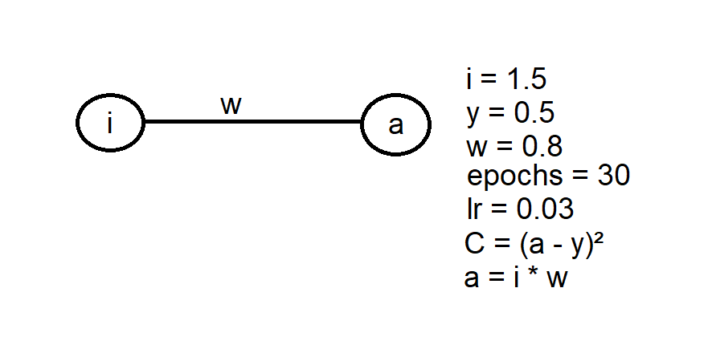
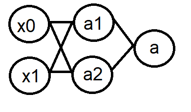

Redes Neurais
Regressão linear e regressão logística são apenas os dois modelos mais simples de Machine Learning. Com esses modelos, temos claras limitações devido à falta de complexidade. Nesse contexto, as redes neurais foram desenvolvidas para que se pudesse construir modelos muito mais profundos, capazes de resolver uma gama muito maior de problemas.
Para conseguir entender as redes neurais, é extremamente necessário que você, após entender a teoria, bote a mão na massa e tente fazer suas próprias redes, a fim de entender como todo o processo dela funciona.
Abaixo temos duas abas, recomendamos que você veja os vídeos para aprender a teoria, e depois tente fazer os códigos por conta, apenas consultando as resoluções quando surgirem dúvidas.
Recomendações
Redes neurais - 3b1b: é uma ótima série de vídeos para se ter uma visão inicial sobre os conceitos de Redes Neurais, principalmente. Recomenda-se começar o estudo de Redes Neurais com essa playlist.
Coursera - Advanced Learning Algorithms: continuação do curso visto na sessão anterior, agora focando em Redes Neurais e conselhos em relação à Machine Learning no geral.
Exercícios para fixação
Redes neurais são extremamente complicadas de entender sem praticar, principalmente a backpropagation, que envolve muita matemática.
Por causa disso recomenda-se tentar implementar redes neurais à mão, o qual é o objeto dos exercícios a seguir
Exercício 1:
Desenvolva uma rede neural trivial para obter o valor desejado de y, conforme imagem abaixo:

O learning rate e o número de épocas fica a seu critério. Os valores da imagem são apenas como referência. É recomendado tentar resolver esse exercício de maneira simples, apenas utilizando um laço for para iterar por múltiplas épocas do treino. O objetivo desse exercício é ter um primeiro contato com o forward e backward pass, observando como muda a loss, o peso e o valor de saída da rede.
Exercício 2:
Modifique o exercício anterior, adicionando uma camada oculta com 2 neurônios e um bias para cada camada, conforme a imagem abaixo:
 Preste atenção em como a loss cai em comparação ao exercício anterior.
Preste atenção em como a loss cai em comparação ao exercício anterior.
Exercício 3:
Construa uma rede neural que simule o portão lógico XOR.
# Tabela verdade XOR
x = [[0,0], [1, 0], [1, 1], [0, 1]]
y = [0, 0, 1, 0]
Para resolver esse problema, é necessário utilizar os conhecimentos obtidos dos exercícios anteriores de forward e backward pass, e adicionar a função de ativação Sigmoide na camada de saída, já que o XOR não é linearmente separável. Diagrama da rede:

Os pesos devem ser inicializados utilizando a função randn do NumPy e os bias devem ser 1.
Para esse exercício, utilize o learning rate de 0.2 e 5000 épocas como referência.
É esperado que ao final do treino a loss convirja para próximo de 0, e a rede neural acerte todas combinações da XOR.
Exercício 4:
Generalize o exercício anterior, adicionando uma classe para as camadas e outra para a própria rede neural.
Segue abaixo uma sugestão para a interface das classes:
class Layer:
def __init__(self, n_of_inputs, n_of_neurons, activation, bias):
pass
def forward(self, x):
pass
def backward(self, chain_rule_derivatives):
pass
class NeuralNetwork:
def __init__(self, input_size, lr):
pass
def forward(self, x):
pass
def backward(self, loss_derivative):
pass
def append_layer(self, output_number, activation, bias):
pass
Utilize a biblioteca NumPy para construir as matrizes dos pesos e dos bias.
Exercício 5:
Utilizando a rede construída no exercício anterior, construa um modelo para classificar as imagens dos dígitos escritos à mão do dataset MNIST.
Baixe o dataset diretamente ou utilizando o PyTorch
Resoluções dos exercícios
É fundamental olhar as resoluções somente após tentar fazer os exercícios por conta.
Exercícios 1 e 2
Exercício 3
Exercício 4
Exercício 5